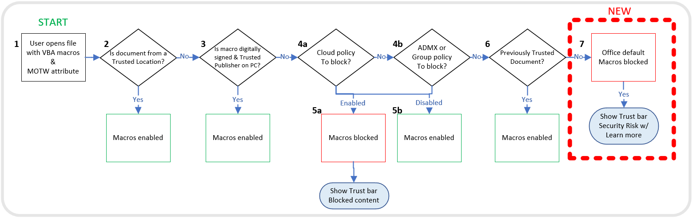
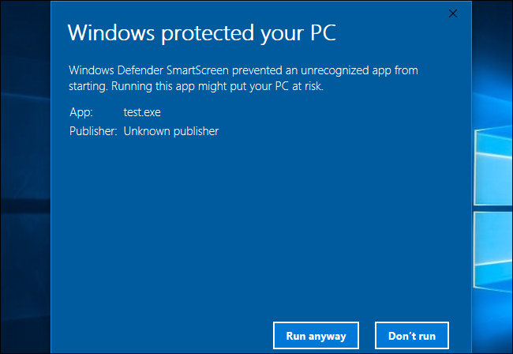

Exploring MOTW nature, WinRAR and other bypasses, risks and mitigations
Lately microsoft took the decision to block macros of files coming from the internet,by default, as it's one of the most common ways threat actors tend to distribute malware ,
To do so windows and microsoft office products rely on the presence of "Mark Of The Web" on files to identify it's origin and ultimately decide to trust the file or not , and expectedly, after this decision threat actors started looking for bypasses for MOTW.
In this article i'll go through the following:
What is mark of the web
winRAR decision, bypass and fix
Other bypasses
Takeaway and how to protect yourself
Mark Of The Web ?
 When you try opening executables from the internet windows smart screen blocks the file with a popup and a prompt to run anyway or not ,
this happens because the file have MOTW tag set ,
a similar behaviour with script files like javascript , vbs and so on :
According to microsoft "Mark of the Web is added by Windows to files from an untrusted location, such as the internet or Restricted Zone" see (MOTW And zones)
So technically according to microsoft it's just an ADS (alternate data stream ) which is an NTFS feature in windows where u can basically add or append data to a file ,
for instance in this case an alternate data stream with the name Zone.Identifier is set to define the origin of the file , the "ZoneId" defines if the zone is "trusted" or not , according to microsoft: id of 3 means the file comes from the internet , id = 4 means the file comes from Restricted sites .
The content of this ADS should look usually like this:
[ZoneTransfer]
ZoneId=3You can set this for testing with powershell command:
Set-Content -Path '.\TEST.docx' -Stream Zone.Identifier -Value '[ZoneTransfer]','ZoneId=3'This will set the zone id to 3 which means internet , so the file is untrusted, for word documents this means the file will be blocked by default and the old option of enabling macros with one click will not be there anymore instead this is the new message: (see more)
Now that we know what is it and how it works lets look at how red teamers (or hopefully not threat actors) might go about bypassing it.
WinRAR decision and bypass
Most archiver software , at the moment, don't support MOTW propagation or the support is far from perfect ,
it makes sense to look at winrar first at it's by far the most popular , it seemed that winrar took the decision to roll back it's support for MOTW propagation to all types of files except microsoft office files, this was due to problems that happened in some installers.
But as i said the current implementation is far from perfect and archivers are not yet taking this feature seriously, so i tried to find a way to bypass MOTW with winrar for microsft office files.
Since we know that MOTW is nothing but ADS , which is an NTFS option, a feature in winrar caught my attention, preserving NTFS streams, this means it could preserve MOTW , so what if i create a malformed stream will it be preserved or interfere with the process of propagating and applying the actual MOTW ?
Set-Content -Path '.\poc.doc' -Stream Zone.Identifier -Value 'malformed or empty'.\Rar.exe a -os poc_os.rar .\poc.docnow we tag the archive file with mark of the web simulating the case of it being sent over email attachement for exemple, we do that again with the same command:
Set-Content -Path '.\poc_os.rar' -Stream Zone.Identifier -Value '[ZoneTransfer]','ZoneId=3'I contacted them regarding this conflict and they fixed the issue in version 6.20 beta 2 , currently it will ignore the archived Zone.Identifier stream if the host archive has MOTW set to ZoneId=3 or 4 , (internet, and Restricted sites respectively)
Other ways to bypass MOTW:
Among the multiple ways currently observed in the wild to bypass MOTW, we find the use the .ISO, VHD, IMG,...
Files such as ISO containers don't support NTFS, which means won't can't have ADS which in turn means no MOTW tag for files extracted from them ,
Although officially microsoft patched this bypass in November Patch Tuesday , as of now , ISO files do propagate MOTW to files contained inside them .
CVE-2022-41049: a mark of the web bypass in explorer.exe, failing to propagate MOTW to files contained in zip archives if files are read only which caused to process to fail with acces denied while trying to append MOTW stream to the file.
Other 0-days are also observed in the wild such as malformed signature on .js files that cause windows smart screen to fail and execute the file instead of showing the blocking warning.